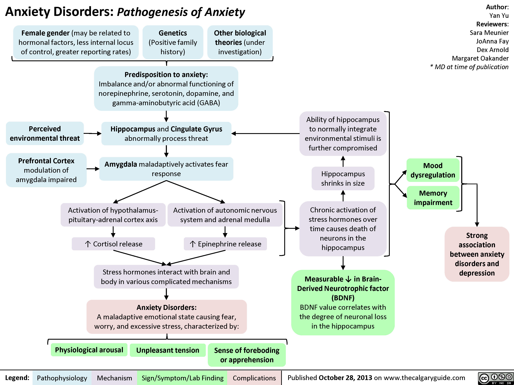
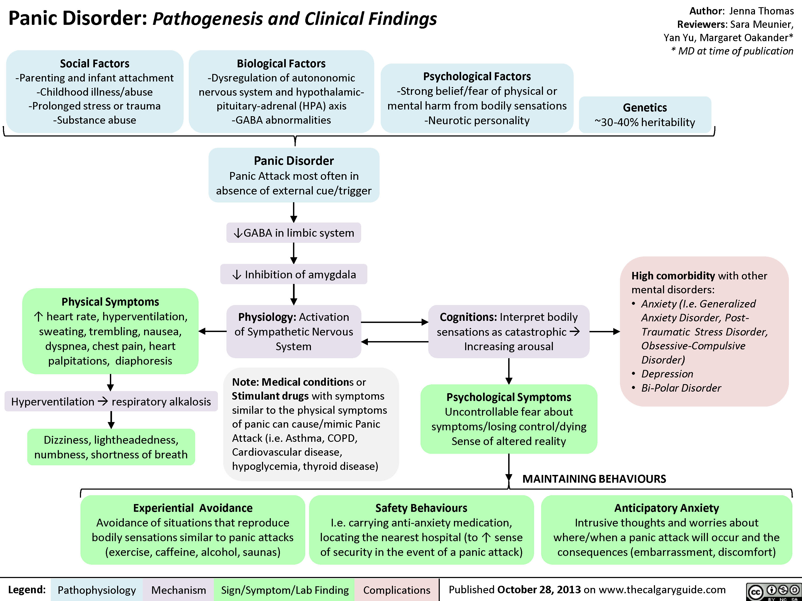
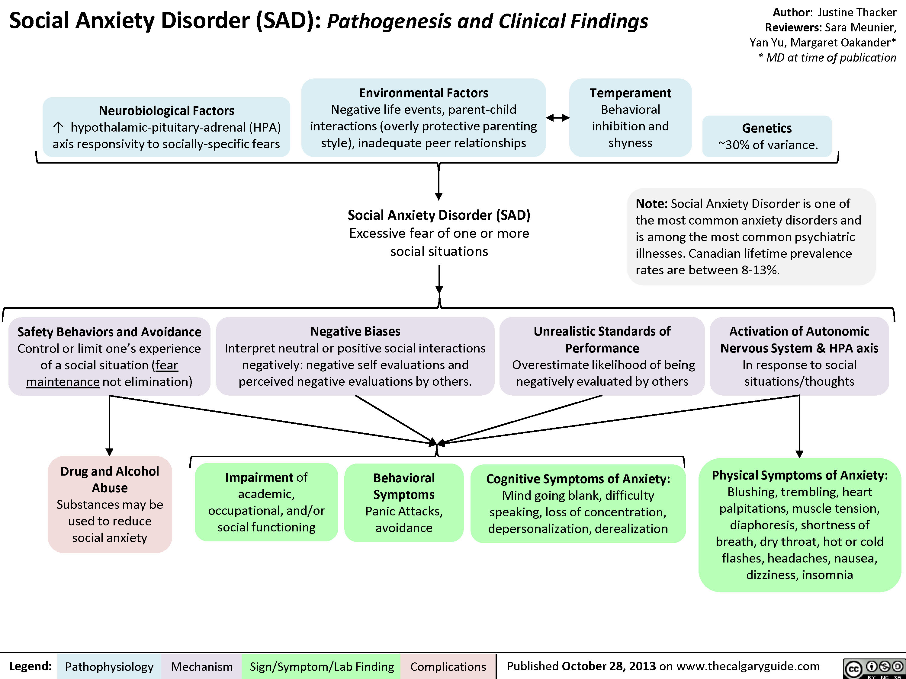
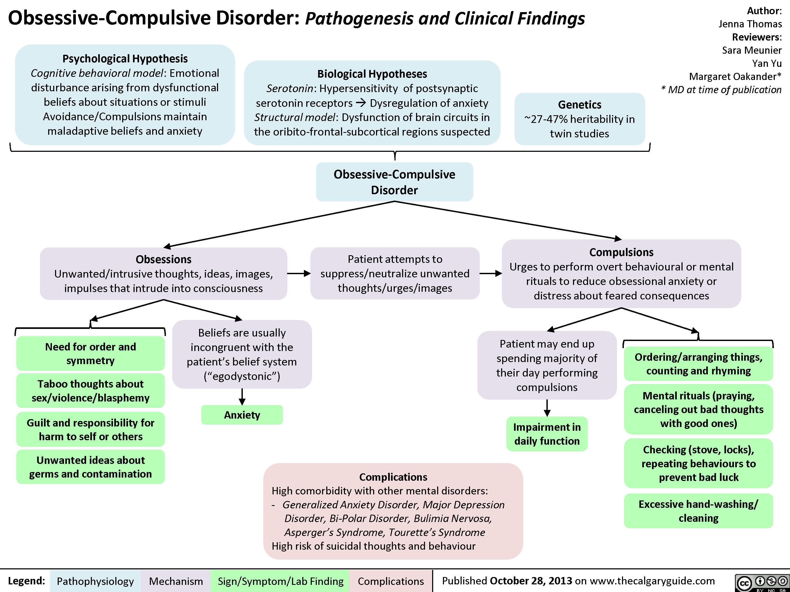
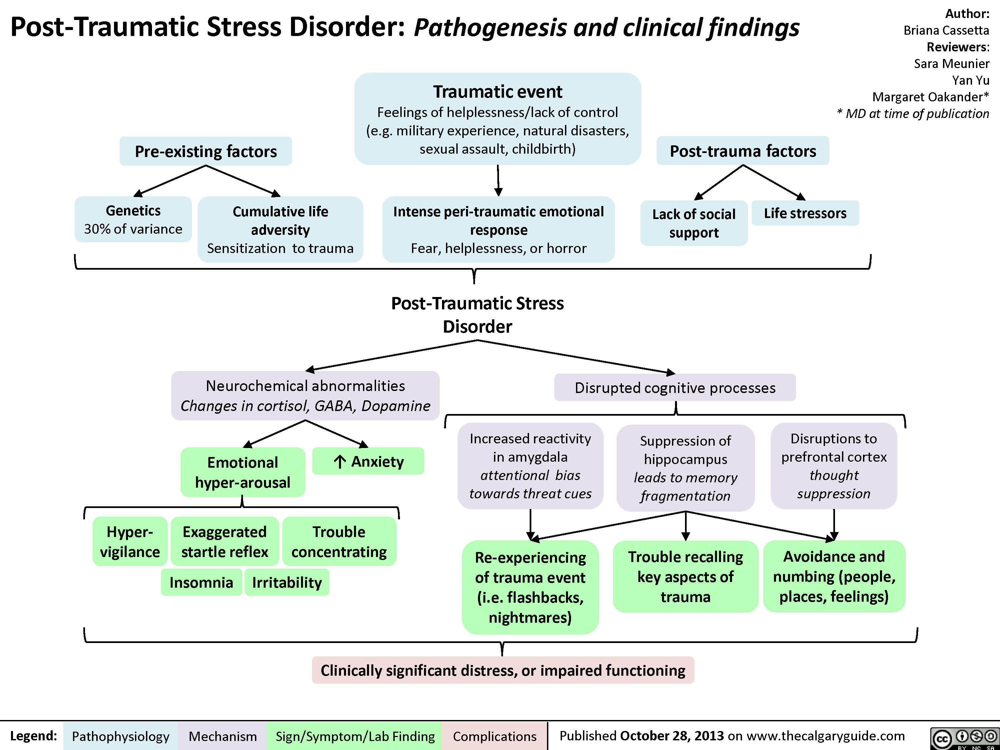
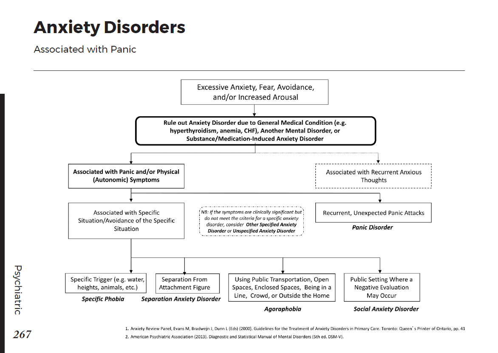
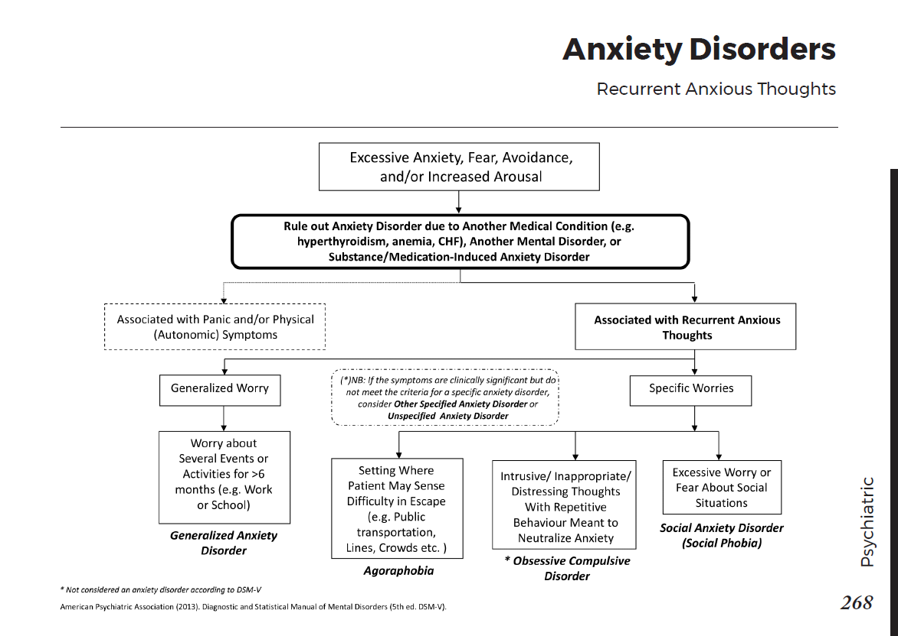
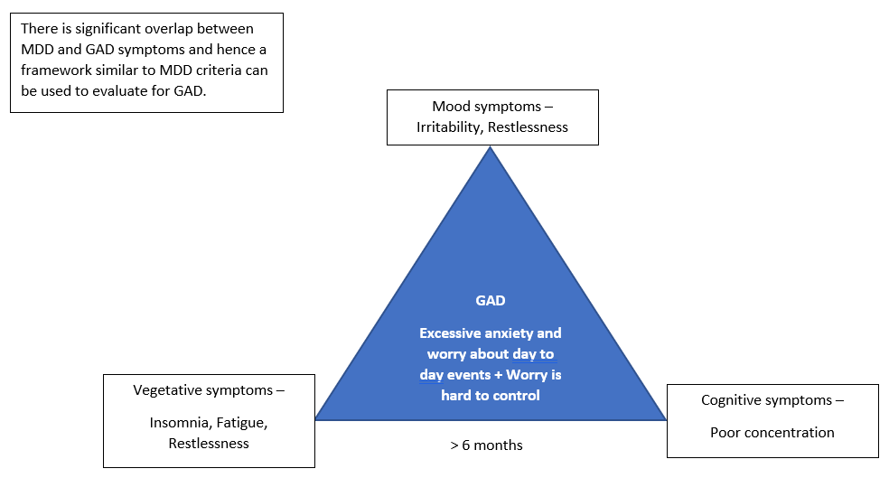

Chapter 8: The patient who is anxious
Screening, assessment and diagnosis
What is expected of a primary care clinician?
When to refer to a specialist?
Treatment: Non-Pharmacological
Self directed learning material
Anxiety symptoms are extremely common and generally can be managed in the primary care setting. A major task for the primary care provider is to determine
1. whether the patient's symptoms stem from a reaction to a distressing situation, indicate an anxiety disorder or another emotional disorder,
2 or arise from a medical condition.
Clinicians can provide psychoeducation and treatment, including brief psychotherapy. Medication and referral may also be required.
Pathogenesis





Screening , assessment and diagnosis
Screening questions for anxiety disorders
- GAD - Do you worry excessively?
- Panic attacks - Do you have anxiety attacks?
- Agoraphobia - Do you avoid going certain places because you are fearful of having a panic attack?
- Social phobia - Are you uncomfortable in social situations?
- Specific Phobias – Do you have any specific fears such as fear of insects or flying?
- OCD - Do you have any unusual or repetitive thoughts that you know are silly but you cannot stop thinking about? Do you feel there are certain rituals you have to do?
- PTSD - Do you painful memories or dreams of a terrible experience, such as a an accident?
Detailed assessment for diagnosis of anxiety disorder is listed here.
Differential Diagnosis


1. Organic disorders
- Several organic conditions, substance and medications as shown in the figures above can cause anxiety and need to be ruled out before diagnosing primary anxiety disorders. Specific investigations for organic pathology depend on the patient's clinical presentation, age, sex, health history and other individual and familial factors. Following investigations are suggested based on clinical suspicion:
- complete blood count
- urinalysis
- fasting glucose
- fasting lipid profile (total cholesterol, very low-density lipoprotein, low-density lipoprotein, high-density lipoprotein, triglycerides)
- 24-hour creatinine clearance (if history of renal disease)
- electrolytes
- thyroid-stimulating hormone
- liver enzymes
- electrocardiogram (if over 40 years old or if indicated
- serum bilirubin
- pregnancy test (if relevant)
- serum creatinine
- prolactin
- urine drug screening for substance use
2. Panic disorder
- Recurrent unexpected panic attacks (4/13 symptoms)
- palpitation, chest pain, difficulty in breathing, or choking sensation
- sweating, tremulousness, dizziness, tingling sensations or hot/cold sensation
- going to go crazy or going to die
- de-realization / depersonalization
- Duration - 1 month
- Distress - At-least 1 attack has been followed by
- fear of another attack
- persistent worry about implications of the attack
- significant change in behaviour because of attacks
- Differentials - substance, organic conditions, other mental disorders
- “Panic Attack Specifier” can be used for discrete panic attacks without the additional criteria for a full panic disorder
3. Agoraphobia
- Anxiety about being in places or situations from which escape might be difficult or embarrassing e.g. Bus, train or other public transport, open spaces, closed spaces, being in a line or in a crowd or being alone outside of home
- Duration - 6 months
- Distress - These situations are avoided or endured with marked distress
- Differentials - organic conditions or other mental disorders
4. Social Phobia
- H/o Difficulty in social situations
- Patient feels fear of social performance (being judged or being scrutinized) [because of the negative appraisal]
- Exposure induces anxiety [because of autonomic activity]
- Avoidance of feared situations [as a safety behaviour]
- Duration - 6 months
- Distress - marked distress or impairment
- Differentials - organic conditions or other mental disorders
- subtype - performance only (performance anxiety)
5. Specific phobia
- Fear of specific object or situation
- Exposure induced immediate anxiety or fear
- Assess for avoidance - Do you find yourself taking steps to avoid this? What are they?
- Avoidance of feared situations
- Duration - 6 months
- Distress - marked distress or impairment
- Differentials - other mental disorders
- subtypes -
- A - Animal
- N - Natural environment e.g. heights
- B - Blood injection, injury type
- O - Other
- S - Situational
6. GAD (Generalized anxiety disorder)

- Core sx - Excessive anxiety and worry about day to day events + Worry is hard to control
- Associated sx - any 3 required
- mood symptoms (irritability, restlessness);
- physical symptoms (insomnia, fatigue, muscle tension).
- cognitive symptoms (poor concentration)
- Distress - The anxiety causes much distress and has a markedly detrimental effect on these persons’ daily lives. They seek constant reassurance from others, but never feel really reassured.
- Duration - more than 6 months
- Differentials
- Another mental disorder
- Substance
- Another medical condition
7. OCD - specific pathogenesis and summary of DSM criteria
- Core symptoms - Obsessive thoughts, compulsions, or both
- Obsessions - Obsessions are intrusive and unwanted repetitive thoughts, urges, or impulses that often lead to a marked anxiety or distress.
- Compulsions - repetitive actions, commonly driven by an obsessive thought, performed to relieve anxiety
- Distress
- Symptoms and behaviours consume at least 1 hr/day or cause significant distress and impairment
- Differentials
- Medical illness
- Substance
- Other psychiatric disorder
7. PTSD
- Core symptoms
- Traumatic event - history of a traumatic event that involved death or harm to self or others
- Re-experiencing - intrusive memories, nightmares, flashbacks [1]
- Avoidance - avoiding things that associate with the memory? May use specific activities or situations related to the actual trauma [1]
- Negativity - Since the event, Irritability or recklessness, anhedonia, negative cognitions [2]
- Arousal - felt on edge much of the time, startle easily [2]
- Distress - Marked distress or impairment in functioning
- Duration - >=1 month
- Differentials
- Exposure through media, electronic, movie or photo
- Related to substance use
- Related to another medical condition
What is expected of a primary care clinician?
- Follow up on complaints of anxiety.
- Clarify the major anxiety symptoms, use screening questions.
- Discuss probable diagnosis.
- Offer psychoeducation about self-help, psychotherapy, medication use.
- Offer medication treatment:
- SSRI or SNRI +/- BZD
When to refer to a specialist?
- Following an attempt to treat the patient or earlier if the patient is significantly impaired
- With anxious children or adolescents who are too fearful to attend school or to socialize
- With adults who cannot get to work or maintain their usual activities of daily living (e.g., child care, shopping, hygiene)
- In the presence of multiple co-morbid mental disorders (e.g., depression, substance use, suicidality)
Treatment: Overview
All patients should receive education, including information about their disorder, treatment choices. Both psychopharmacological and psychotherapeutic treatments provide high response rates for all the anxiety disorders. Specific phobias rarely need medication and should be treated with psychological interventions.
Treatment choice depends on the acuity and severity of the presenting condition. In most cases the symptoms have been present for months or years before patients seek treatment.
Where there is a severe onset or exacerbation of an anxiety disorder with marked impairment of functioning and there is no contraindication, benzodiazepines are a very effective short-term option. In PTSD there is no observed benefit from administering benzodiazepines acutely.
CBT can be used along with medications.
Treatment: Pharmacological
Medications are the most common treatment for anxiety disorders. However, they can be costly and they all have side-effects.
Medications with evidence to support their use in anxiety fall into three groups:
- antidepressants
- anxiolytics
- other psychotropic agents used mainly to augment antidepressants
Antidepressants
All of the antidepressants have been shown to be variously effective in reducing symptoms of the anxiety disorders.
1st Line anti-depressant for anxiety disorders
- SSRI - Citalopram, Escitalopram, Fluoxetine, Fluvoxamine, Paroxetine, Sertraline
- SNRI - Duloxetine, Venlafaxine, Desvenlafaxine
2nd line anti-depressants for anxiety disorders
- TCAs - Imipramine, Clomipramine
- Novel action - Buproprion, Mirtazapine
- MOAI - Moclobemide, Tranylcypromine
All antidepressants should be started at a very low dose in anxiety disorders. Anxious patients can be extremely intolerant of the side-effects of agitation and akathisia that may occur at the onset of treatment. Doses of fluoxetine and escitalopram as low as 5 mg daily are often necessary.
Use the lowest dose available of SNRIs (e.g., venlafaxine 37.5 mg daily). Despite starting at a low dose, the ultimate effective dose is usually the same as in major depression or even higher.
Anxiety disorders often need prolonged treatment before the desired results are achieved. It is better to start at a low dose with a gradual increase over a long period of time than it is to challenge patients with doses that they cannot tolerate, leading to frequent switching of medications.
If the first SSRI or SNRI does not help at all after eight weeks, discontinue it slowly and use another SSRI or SNRI. If two medications do not work, a specialist referral may be advisable.
The overall duration of medication treatment in anxiety disorders is one year or more followed by slow tapering. Many patients relapse during the withdrawal phase. The rate of relapse is reduced when treatment includes cognitive-behavioural therapy (CBT), or when CBT is introduced during tapering.
Buspirone can be helpful in generalized anxiety disorder and to augment antidepressant treatment. It does not have the acute therapeutic effects of benzodiazepines.
Benzodiazepines
Benzodiazepines are effective for most anxiety disorders. They do not offer much benefit in OCD. Care needs to be taken in post-traumatic stress disorder due to very high rates of co-morbid substance use disorders. It is advisable to avoid benzodiazepines in acute stress disorder.
Dependence is a significant problem. Inter-dose exacerbation of anxiety can be confused with worsening of the original disorder. For benzodiazepines, make a contract with the patient about the discontinuation date. Six to eight weeks of use in a new case is the suggested limit while an antidepressant is co-administered and then continued as the benzodiazepines are tapered.
Treatment: Non -Pharmacological
For anxiety, cognitive-behavioural therapy (CBT) is the psychotherapy with the best evidence base and therefore is the first-line psychotherapy. Patient choice is an important factor in the success of any therapy for anxiety. Those who choose CBT generally do better than those who are assigned to it without choice. When CBT is instituted, an adequate treatment trial should be administered, with appropriate monitoring and long-term follow-up.
Exposure and response prevention is helpful in cases of OCD.
Self directed learning material for anxiety disorders
1. Psychiatric interview for teaching anxiety
2. ADMSEP module for anxiety disorder link.
3. ADMSEP module for OCD link.
Bibliography
1. Portico network - Psychiatry in Primary Care Toolkit
2. Black Book - University of Calgary
3. Synopsis of Psychiatry 11e.
4. Carlat, Daniel. The Psychiatric Interview. Wolters Kluwer Health. Kindle Edition.
5. Nussbaum A. DSM-5 Diagnostic interview.
6. thecalgaryguide.com
7. ADMSEP modules
8. University of Nottingham teaching videos
Created with the Personal Edition of HelpNDoc: Easily create EPub books